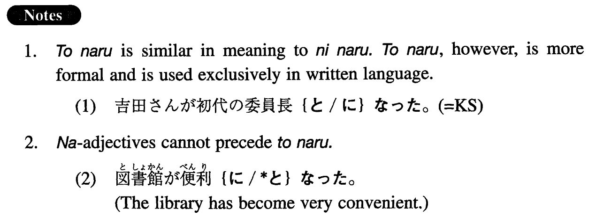

←
DoJG
→
となる
(I. 511)
Example sentences
(ks).
吉田さんが初代の委員長
となった
。
Mr. Yoshida has become the first committee chairman.
(a).
その土地は結局国の所有物
となった
。
That land eventually become state property.
(b).
戦後義務教育は九年間
となった
。
After the war, (the period of) compulsory education was changed to (literally: became) nine years.
(c).
彼らの結婚は悲劇的な結果
となった
。
Their marriage ended in tragedy (literally: became a tragic result).
(d).
彼は証拠不十分で無罪
となった
。
For lack of evidence, he was found (literally: became) innocent.
(e).
その試合は雨のため中止
となった
。
The game was cancelled (literally: became a cancellation) due to rain.
Formation
Noun
となる
必修科目
となる
Become a compulsory subject
